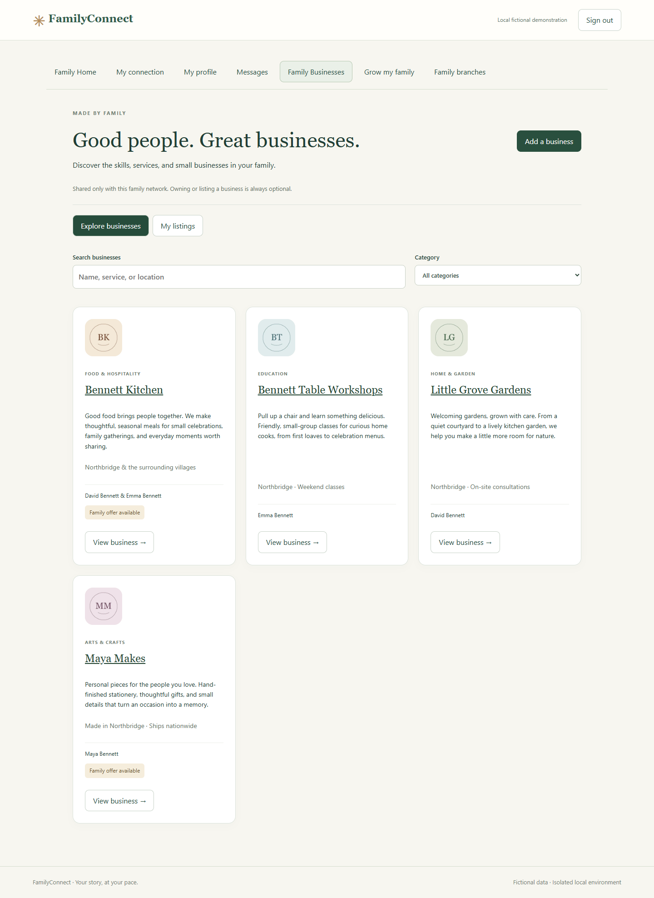
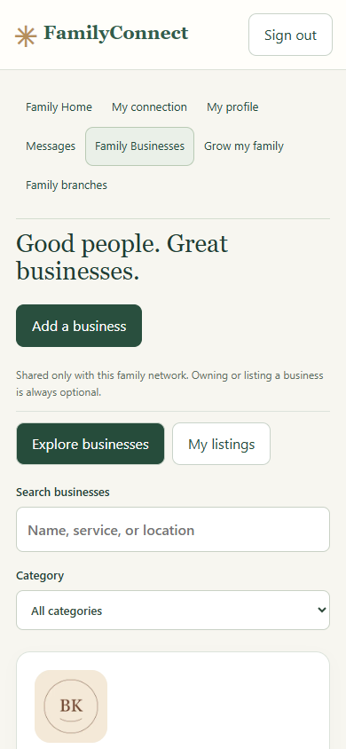
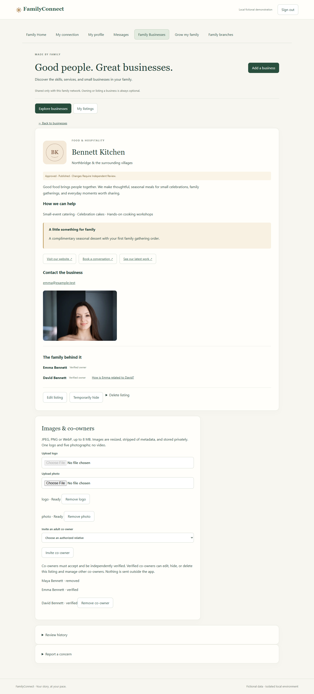
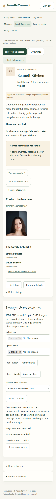
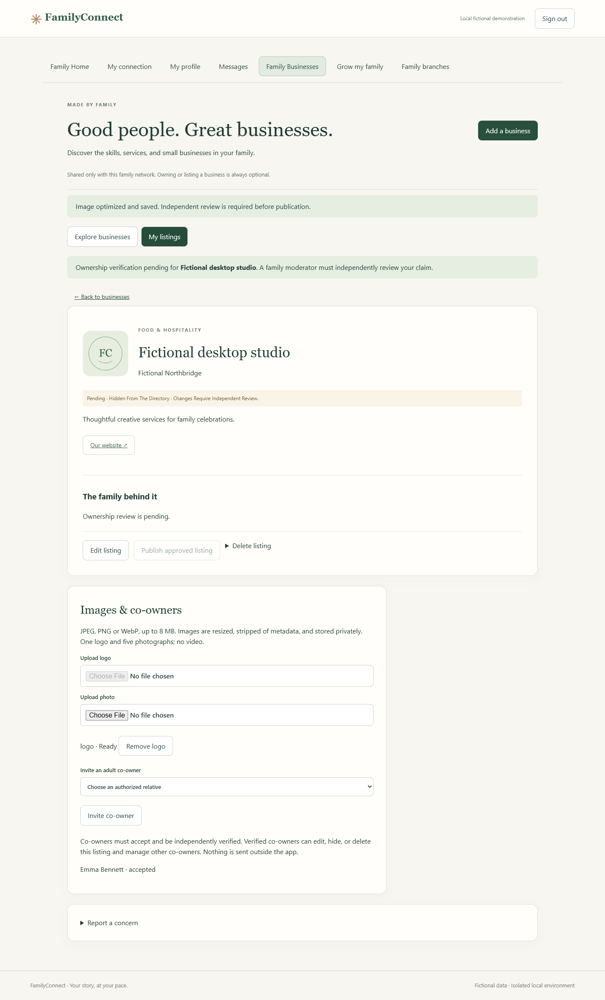
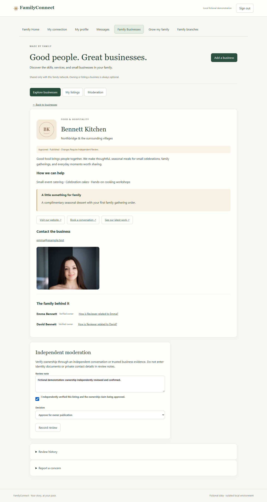
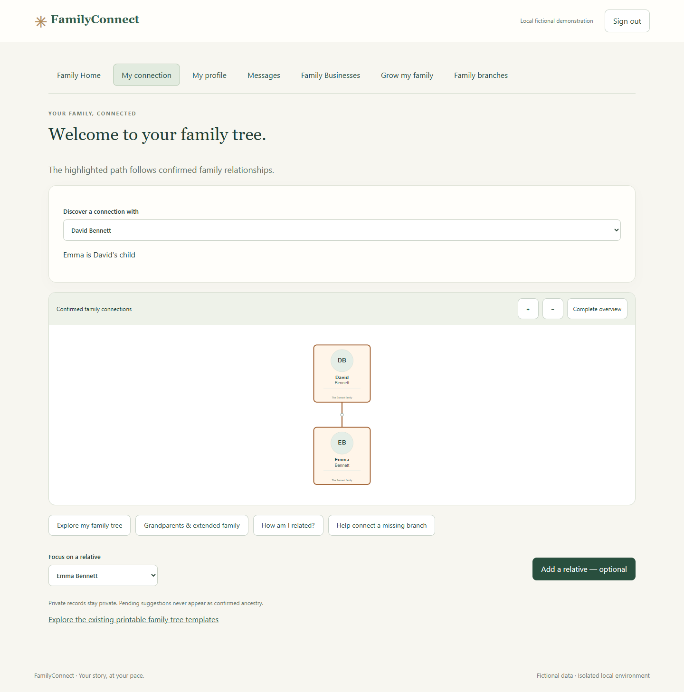
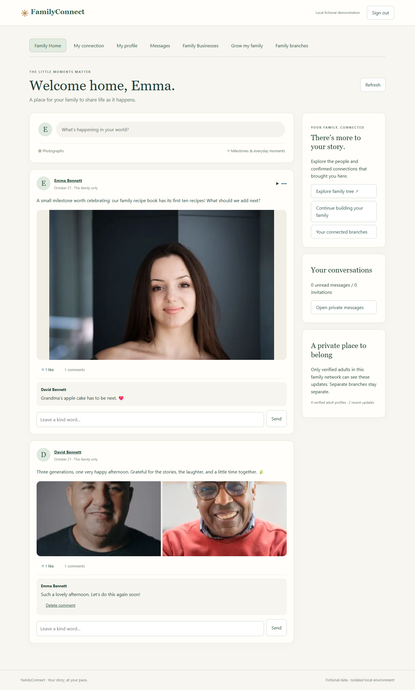

LOCAL REVIEW PACKAGE · 21 OCTOBER 2026
Family businesses, shared with family.
The directory is implemented and demonstrated in isolated local development. It is included in the first private-beta scope. Listings remain optional, and Family Home remains the authenticated landing page.
Ready for your local review, not released. No hosted Supabase changes, public deployment, real invitations, or payment features were performed. The two hosted Auth accounts were not accessed or modified. Existing hosted security and beta-approval gates remain in force.
Open the local demonstration · Launch readiness · Test summary · Storage measurements
Actual application screenshots
Captured with Playwright in Chrome at 1440 × 1050 and 390 × 844. Desktop directory/detail, mobile starting/detail views, owner controls, and moderation output were inspected. Mobile introductory copy was reduced after review so the first listing starts within the opening viewport. These are rendered application screenshots, not mockups. Click to open full resolution.

Desktop directory: search, categories, verified family owners, and offers.

Mobile starting view. Full mobile directory.

Business detail with photograph, three links, contact consent, offer, and owners.

Mobile detail. A member who is not an owner receives no management controls; this is also covered by browser tests.

Owner draft after adding details and uploading a logo. Changes wait for independent review.

Network administrator review, ownership attestation, and review history.

Existing engine: “Emma is David's child.” No relationship is invented when a confirmed path is absent.

Phase 7 Family Home remains the landing page, with the directory added to navigation.
Repository and legacy inventory
Audit preceded implementation. Starting working tree was clean at 22a553b. Relevant history was inspected across available refs, including 1bc35a6^, 25281e7, 5b473b6, and the later restructuring at e1d8633. No legacy application or hosted endpoint was run.
Implemented feature inventory
New schema: 014 business baseline and 015 private-owner projection. Six normalized tables cover businesses, owners, links, media, reviews and reports. Style: businesses.css.
Security findings and safeguards
- The legacy global authenticated-read policy and unescaped cards were unsuitable for reuse. They were not brought into the normalized directory.
- All six new tables have RLS. Anonymous and authenticated clients have no raw table grants. Narrow security-definer RPCs pin their search path, check current membership/authority, validate data and expose only appropriate fields.
- An owner cannot approve their own business even if they are a network administrator. Both primary ownership and accepted co-owner claims require independent review. Verified co-owners have full listing-management rights, including deletion; the UI discloses this.
- Private Storage authorization checks the exact image path against an accessible listing. A valid image in one family cannot unlock another family's object, including through the existing social-image policy. Upload completion rechecks authority.
- Owner identity eligibility is checked on each read. Migration 015 removes the raw primary-owner identifier from the response, so a later eligibility change does not expose that identifier.
- Revision checks reject stale saves. Mutations are serialized per user and limited to 20 successful operations per action per minute. Link/image limits and field lengths are enforced in the database.
- Deleted/hidden listing images are denied on subsequent authorized fetches. Data already downloaded by an authorized person cannot be recalled. Orphan bytes are removed after the 24-hour grace period by the shared hourly cleanup worker.
Test results
245 functional/security/regression scenarios passed, zero final failures. Two additional final screenshot/overflow checks passed. Build passed. No regression was found in the exercised Phase 6/6B/7, family-tree, or premium-template suites.
Two initial directory browser assertions were corrected: the category selector's accessible name, and the existing engine's direction-specific wording (“Emma is David's child”). Both passed in the completed runs. The connection screen's introductory text was also adjusted to recognize an explicitly selected confirmed path. Final mobile visual refinements were checked through actual browser captures. Historical output files were preserved; current regression evidence is archived under output/business/regressions.
Storage and cost implications
The four fictional businesses have six images. Measured image-plus-thumbnail storage is 106,606 bytes (about 107 KB); the six thumbnails total 23,878 bytes. Measurements exclude database rows, backups, Auth and protocol overhead.
- Upload input: at most 8 MB and 25 megapixels. Two processing jobs at a time. Full output: at most 1600 × 1600; thumbnail: at most 400 × 400. The processor preserves aspect ratios and strips metadata.
- Each asset is capped at 1.4 MB full image plus 100 KB thumbnail. Six assets therefore cap retained listing media at 9 MB. At that worst case, 100 fully populated listings consume 900 MB, before backups/metadata.
- Directory cards and detail logos use thumbnails. A 20-card page is capped at 2 MB of logo thumbnails, excluding text/overhead. Detail photos use optimized full images; five maximum-size photos could add 7 MB. Actual demo images are far smaller.
- No video transcoding, map service, business-specific email service, payment provider, or paid placement is added. Existing Supabase/Postgres/private Storage and the shared image worker are reused.
- Private authenticated image fetches prioritize privacy over public CDN caching. Repeated views can incur egress; the worker incurs CPU/memory costs. Account/network-wide storage budgets and hosted spending alerts still need an operational decision before real use. Provider dollar prices were not assumed or quoted.
Local demonstration and repeatable tests
- With the existing local services running, open 127.0.0.1:5176/phase6.html.
- Read fictional sign-in details locally from
output/business/private/demo.json. Use Emma for ownership, Maya for another member, and Reviewer for independent moderation. This ignored private file is not included in the report.
- Choose Family Businesses. Explore Bennett Kitchen, Little Grove Gardens, Maya Makes, and Bennett Table Workshops. Emma owns two listings; Bennett Kitchen also has verified co-owner David.
- Open Bennett Kitchen to inspect its three links, family offer, consented contact, photograph and owner relationship path. Example links use reserved
example.test addresses; they are intentionally not real businesses.
- Create a private draft, edit it and upload a logo. Sign in separately as Reviewer to approve it; then return as its owner to publish. Try hiding, co-owner consent and removal, and reporting.
If services are stopped, use the existing isolated workspace only. Node 22+ is required; this run used Node 24.14.0.
supabase start --workdir local/phase6
supabase migration up --local --workdir local/phase6
.\scripts\phase7-start.ps1
# In a Node 22+ shell, create a fresh fictional directory demo if needed:
npm run demo:business
npm run test:business
npm run test:business:browser
node scripts/business-visuals.mjs
npm run build:phase6
The startup script reuses the existing Phase 7 services; use the business demo credentials above, not the older Phase 7 demo account, to view these four businesses. Test helpers reject a linked workspace and any API other than http://127.0.0.1:55321. No root/hosted migration command is needed.
Rollback and remaining limits
A pre-change source snapshot and custom-format local database dump were saved privately by business-checkpoint.mjs, with a SHA-256 manifest and baseline commit. This is a local checkpoint, not a verified production backup. It contains private local Auth material and must remain ignored. Storage object bytes are not included, and restoration was not rehearsed.
For a local rollback, first stop the local UI/worker and take a fresh local checkpoint; restore the pre-change database into a separate disposable local stack and verify it before switching local clients. Restore source from the checkpoint/baseline. Preserve the current Storage volume and match object metadata before using restored media. Do not run a destructive restore against the existing stack as a shortcut. Hosted migration, backup/restore and rollback rehearsal remain separate approval gates.
- Ownership verification is a human moderator attestation, not automated legal/company verification. Assign an independent reviewer, review criteria and report-response responsibility before beta. No new critical local blocker was found in the tested scope; this is not an independent penetration test.
- Co-owner invitations and review status are in-app only. There are no business email/SMS notifications, registry lookup, reviews/ratings, transactions, commissions, subscriptions, paid placement or videos.
- Listings stay within one family network. Cross-network business sharing and primary-owner transfer are not implemented. Verified co-owners can manage the listing; its primary owner cannot be removed through co-owner controls.
- Detail views follow the current application's state-based navigation. Reloading returns to Family Home; shareable business deep links and browser-history routing are not implemented.
- Owner edits temporarily hide a listing until review; this conservative first-beta flow has no separately published revision. Hard deletion also removes its review/report records. Define any needed retention policy before hosted use.
- Mobile evidence is browser emulation, not physical iPhone/Android certification. No directory-specific production load test or network-wide storage quota was added. Name/service search uses bounded network-scoped queries, not a dedicated full-text search index.
- Photographs reuse licensed stock portraits of fictional demo characters; they imply no real family connection or business endorsement. Credits and license provenance remain in sources.json. Logos are original generated SVG lettering rasterized locally for upload tests.
- The existing legacy React Router moderate advisories recorded in Phase 7 remain outside this directory change; the local Phase 6/7 entry does not import that router. Hosted dependency/security review remains required.
Stopped for review. Review the directory, mobile layout, co-owner authority, and moderation flow. Including this feature in the private-beta scope does not approve hosted changes or real-user invitations.